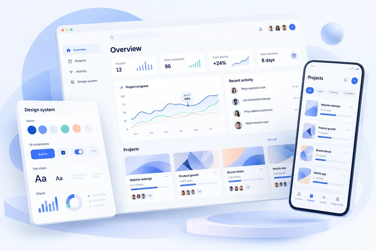

UI/UX Design Services
for Websites, Apps & Software
PrimeLoft is a UI/UX design agency for websites, mobile apps and SaaS products. We plan user flows, design responsive interfaces and prepare Figma prototypes and agreed files for development.
Discuss Your Design Project Explore UI/UX Services
What is UI/UX design?
UI means user interface: the screens, buttons, typography and other elements people interact with. UX means user experience: how clearly and easily someone can complete a task across the whole product.
For example, UI design shapes the appearance of a checkout screen. UX design considers how people find a product, understand the total, enter their details and recover from an error. Both work together to make a product usable.
A better experience.
At every touchpoint.
Our UI/UX design services connect user needs with product goals. Start with a focused UX audit, design a new product, or rethink an experience your customers have outgrown.
01UX audits & research
Review existing navigation, user flows and interface clarity to identify usability issues. We use your brief and available feedback to prioritize redesign recommendations.
- Heuristic reviews & usability findings
- User journeys & information architecture
02Website UI/UX design
Plan responsive website layouts, navigation and key actions so visitors can understand your offer and find a clear path to an inquiry or purchase.
- Sitemaps, page structure & wireframes
- Responsive layouts & clear calls to action
03Mobile app UI/UX design
Design app screens, onboarding and navigation around touch interactions and everyday tasks, then connect the agreed flows in an interactive prototype.
- iOS & Android interface design
- Onboarding, forms & interaction states
04SaaS & dashboard design
Organize SaaS dashboards, admin interfaces and data-heavy screens around the workflows and decisions your users need to complete.
- Product flows & dashboard layouts
- Tables, filters & data visualization
05Wireframing & Figma prototyping
Wireframes establish content, structure and user flows. High-fidelity interface designs define the visual detail, while clickable Figma prototypes let your team review key interactions before development.
- Low- and high-fidelity wireframes
- Interactive prototypes & review rounds
06Design systems & developer handoff
Create reusable interface components, typography and spacing guidance, with responsive rules and interaction notes for the developers building your product.
- Components, tokens & responsive rules
- Organized source files & design specs
Different screens.
The same attention to detail.
We consider content, hierarchy and interaction together. Explore how a shared design language can adapt to websites, mobile apps and product dashboards.
Make the next step feel obvious.
Bring your proposition, content and calls to action into focus. We plan page hierarchy and responsive behavior around the questions visitors need answered.
- Clear navigation and page structure
- Layouts for desktop, tablet and mobile
- Considered forms and contact journeys
Thoughtfully designed for the way people move.
Design for quick decisions, small screens and interruptions. We give onboarding, navigation and repeat tasks the same attention as the first impression.
- Touch-friendly controls and familiar patterns
- Useful feedback, empty and error states
- Connected journeys across iOS and Android
Less searching. More getting things done.
Help people understand information and complete recurring tasks. We shape navigation, tables and data displays around the decisions your users need to make.
- Clear product navigation and permissions
- Consistent tables, filters and actions
- Reusable patterns for growing products
Our UI/UX design process.
From brief to handoff.
You work directly with the people shaping your product. Clear review points help us resolve questions early and keep the work connected to your goals.
- 01 / Understand
Find the real problem.
Review the brief, existing product and available evidence. Agree the audience, priority journeys and what a successful engagement should deliver.
Discovery brief & priority findings - 02 / Structure
Make the path clearer.
Map the content and user flows. Explore wireframes and validate the direction with your team before investing in detailed screens.
User flows & wireframes - 03 / Create
Bring the experience to life.
Develop the visual language, responsive screens and interaction states. Connect key journeys in a Figma prototype for review.
UI designs & interactive prototype - 04 / Refine & hand over
Prepare it for the real world.
Review usability, refine agreed feedback and organize the handoff. When testing is included, use findings to guide the next iteration.
Design files, components & specifications
Your design.
Your files.
Your next chapter.
Good design should be useful after the presentation. Your agreed deliverables are organized for the people who will build, maintain and extend your product.
Plan your design projectA handoff your team can work with.
- 01Editable source files
Organized Figma screens, layouts and approved design assets.
- 02Reusable components
Typography, colors, spacing and the interface components in your scope.
- 03Connected prototypes
Clickable journeys that explain how key parts of the product fit together.
- 04Implementation context
Responsive rules, interaction notes and the states developers need to consider.
UI/UX design,
without the guesswork.
From your first brief to the final handoff, here is what to expect when you work with PrimeLoft.
Ask us a questionUser experience (UX) design considers how people navigate a product, understand information and complete tasks. User interface (UI) design shapes the screens, typography, components and interaction states they use. PrimeLoft brings both together so the visual design supports the way the product works.
A project can include a UX audit, user research, journey mapping, information architecture, wireframes, high-fidelity UI design, interactive Figma prototypes and a reusable component library. We agree the deliverables and review stages before work begins, so you know what your engagement covers.
Yes. We can review your current website, mobile app or SaaS product, identify confusing journeys and develop a clearer design direction. Where analytics or user feedback are available, we use them to prioritize improvements rather than changing screens for appearance alone.
Yes. Your agreed handoff includes editable design files, the approved prototype and the components created for your project. We organize screens and document relevant states and responsive behavior so your developers can implement the design with fewer unanswered questions.
Scope depends on the number of journeys and screens, research needs, product complexity and feedback rounds. After reviewing your brief, we propose milestones, deliverables, a timeline and pricing. A focused UX audit and a complete product redesign are scoped separately.
We consider readable typography, color contrast, clear labels, keyboard interaction, visible focus states and responsive layouts during design. Accessibility review and usability testing can be included in the scope. A design review alone does not certify the accessibility of the final implementation.
Clear navigation, useful page structure and responsive layouts can support an SEO-friendly website and make key actions easier to find. We can collaborate with development and SEO on implementation. Design alone does not guarantee search rankings or conversion increases; results depend on the content, build, audience and measurement.
Yes. We can design SaaS dashboards, admin interfaces and data-heavy screens around the tasks your users need to complete. The agreed scope can include navigation, tables, forms, responsive layouts and reusable interface components.
Yes. Development can be scoped as a separate stage after design. Explore our website and software development or mobile app development services, and we can discuss the design, build and handoff requirements together.